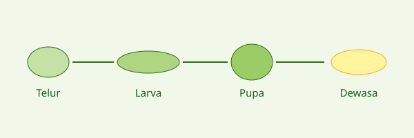

Mengenal Kunang-Kunang
Kategori: Pengetahuan Dasar
Apa Itu Kunang-Kunang?
Kunang-kunang adalah serangga bersayap keras (kumbang) dari famili Lampyridae. Ciri khasnya adalah kemampuan menghasilkan cahaya sendiri melalui reaksi kimia di tubuhnya yang disebut bioluminesensi. Cahaya ini digunakan, antara lain, untuk berkomunikasi dan mencari pasangan.
Siklus Hidup

Kunang-kunang mengalami metamorfosis sempurna dengan empat tahap berikut.
| No | Tahap | Keterangan Umum |
|---|---|---|
| 1 | Telur | Diletakkan induk betina di tempat lembap, misalnya tanah atau lumut. |
| 2 | Larva | Fase makan; banyak jenis larva dapat berpendar dan memangsa siput kecil atau cacing. |
| 3 | Pupa | Fase perubahan bentuk menjadi serangga dewasa. |
| 4 | Dewasa | Fase kawin dan berkembang biak dengan kedipan cahaya khas. |
Ancaman terhadap Kunang-Kunang
Faktor utama
- Polusi cahaya yang mengganggu komunikasi kedipan.
- Hilangnya habitat akibat alih fungsi lahan.
- Penggunaan pestisida dan pencemaran air.
- Pengambilan kunang-kunang untuk hiasan atau tontonan.
Apa yang bisa dilakukan?
Kita dapat mengurangi lampu luar ruangan yang tidak perlu, menjaga vegetasi dan sumber air, serta mengamati tanpa menangkap. Panduan lengkapnya ada di halaman Etika Pengamatan.
Ikut Berkontribusi
Jika kamu melihat kunang-kunang, ceritakan pengamatanmu lewat formulir laporan.